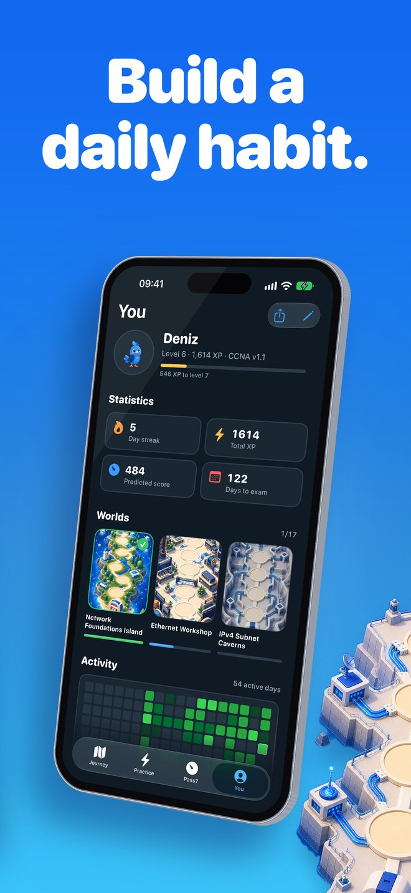
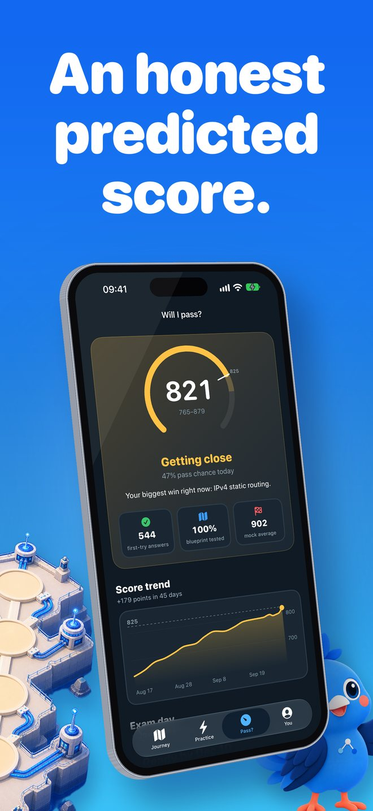
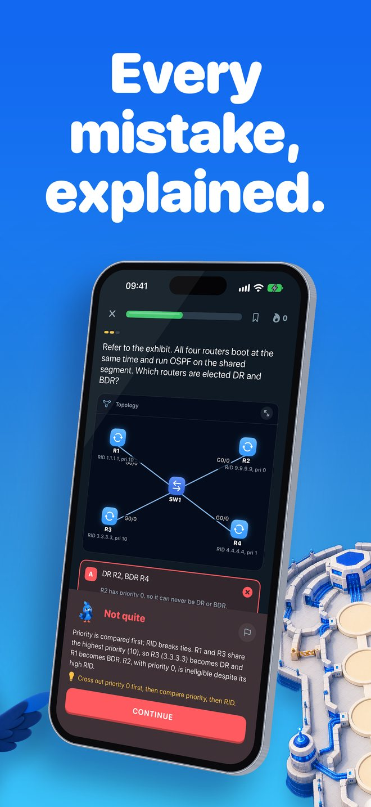
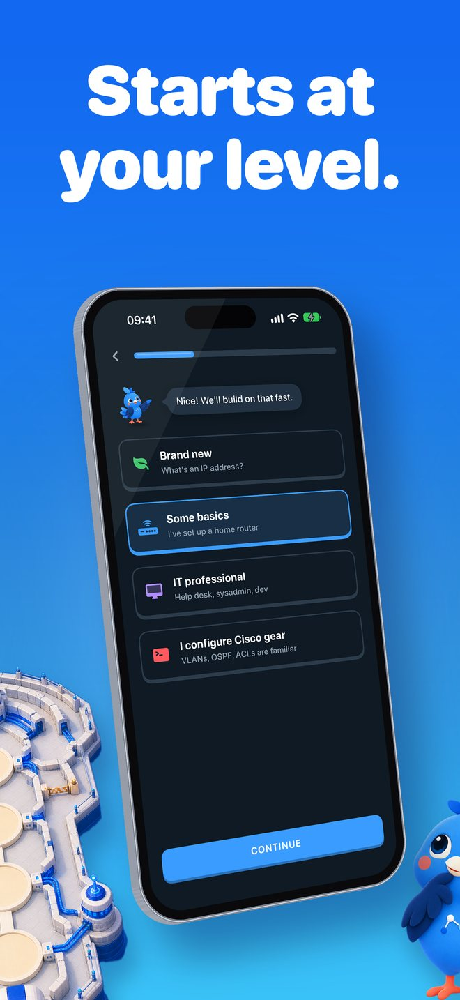
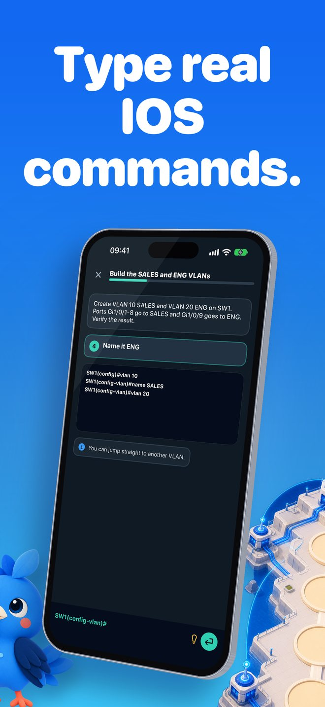
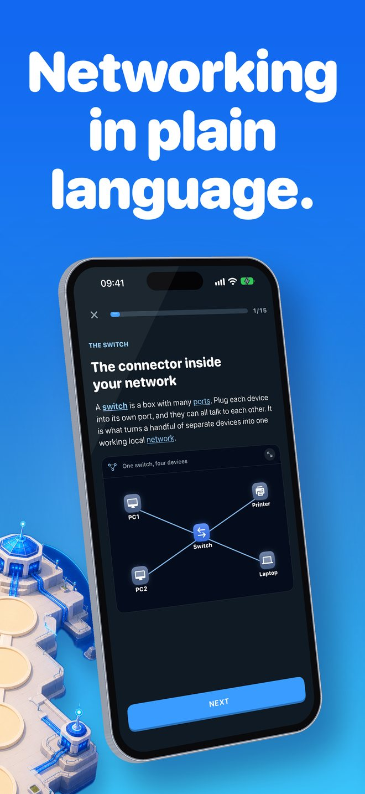
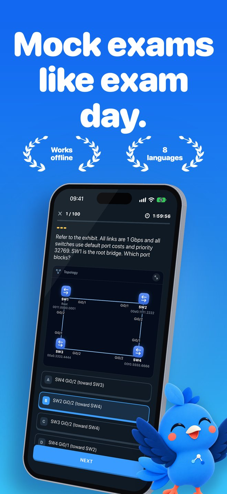

What Linkwing is
Linkwing: Learn Networking is an education app for iPhone (iOS 26 or later) made by independent developer Ata Tunc Bilge. It is built for people who have never configured a router as well as for CCNA candidates who want structured, honest practice. All study material is original and written for the app; it contains no real exam questions.
- App name
- Linkwing: Learn Networking
- What it does
- Teaches computer networking from zero and prepares you for the CCNA 200-301 exam
- Platform
- iPhone, iOS 26 or later
- Category
- Education
- Price
- Free to download; Linkwing Pro is an optional auto-renewing subscription
- Developer
- Ata Tunc Bilge
- Mascot
- Kavi, a friendly blue cockatiel
- Content
- 17 beginner lessons, 15 exam worlds, 1,136 original exam-style questions, 929 flashcards, 75 IOS command labs, unlimited subnetting drills, timed mock exams of 20, 50 and 100 questions
- Exam versions
- CCNA 200-301 v1.1 (exams until 2 February 2027) and v2.0 (from 3 February 2027)
- Languages
- Interface and the 17 beginner lessons in English, Spanish, Portuguese, Japanese, Korean, Arabic, Turkish and Simplified Chinese; exam-style questions and IOS labs in English
- Offline
- Yes; no account needed
- Download
- Linkwing on the App Store
Who Linkwing is for
- Complete beginners with no IT background who want to understand what a network, a switch, a router or an IP address is.
- Career changers moving into IT support, networking or infrastructure roles.
- IT and computer science students who need networking fundamentals for their course.
- CCNA 200-301 candidates who want exam-style practice, hands-on command labs and an honest estimate of their readiness.
How Linkwing works
Linkwing is one path from the very first lesson to exam day. You start where your knowledge starts, learn in short sessions, and practice the same skills the CCNA 200-301 exam tests.
Start Here: networking from zero
Two beginner worlds with 17 short lessons explain what a network is, clients and servers, switches, routers, firewalls, LAN, WAN and the Internet, IP and MAC addresses, cables and fiber, PoE, Wi-Fi, VLANs, servers, RAID, NAS and backups. Lessons use everyday analogies and diagrams, and you can tap any highlighted word for a plain-language meaning. Every lesson ends with easy questions that explain every wrong answer.
A check-up that skips what you know
Tell Linkwing your level. Brand-new learners start at lesson one; everyone else takes a 5-question adaptive check-up that skips what they already know.
An illustrated map of 15 exam worlds
Kavi flies you from stop to stop across Network Foundations, Ethernet, IPv4 subnetting, Switching, VLANs, Spanning Tree, Routing, OSPF, IPv6, Services, Security, Wireless, Automation, Troubleshooting, ending at the Exam Summit. Daily streaks, XP, badges, daily quests, a question-of-the-day widget and an opt-in daily reminder keep sessions short and regular.
1,136 original exam-style questions
Question types include exhibits, choose-two, ordering, matching and calculations. Every question is original and written for Linkwing. 929 flashcards use spaced repetition for the facts worth memorizing.
75 IOS command labs
Type real Cisco IOS commands to configure and verify devices. Abbreviated commands are accepted, as they are on real equipment.
Subnetting Gym
Unlimited generated subnetting drills, so there is always fresh practice for the calculation questions. See also the subnetting cheat sheet.
Timed mock exams
Mock exams of 20, 50 and 100 questions, weighted like the exam blueprint for your version (v1.1 or v2.0).
An honest predicted score
The Pass? tab shows a predicted score out of 1000 only after 40 first-try answers, with an uncertainty range, a pass-chance estimate and a Road to exam day checklist.
Meet Kavi. Linkwing's mascot is Kavi, a friendly blue cockatiel who flies ahead of you on the map and adds short tips to lessons.
How the predicted score works
Linkwing's Pass? tab does not show a readiness number until there is enough evidence to say something useful:
- No number at all until you have answered 40 questions on the first try.
- A predicted score out of 1000 with an uncertainty range, not a single falsely precise number.
- A pass-chance estimate and a score trend chart.
- A Road to exam day checklist of 6 criteria.
- An exam-day forecast: when you will be ready at your daily study minutes, compared with your exam date.
- Cisco does not publish the passing score, so Linkwing conservatively assumes that about 80% correct corresponds to roughly 825 out of 1000.
- The prediction is an estimate, not a guarantee of passing.
CCNA 200-301 v1.1 and v2.0
Linkwing supports both versions of the exam and picks the blueprint from your exam date: v1.1 for exams up to and including 2 February 2027, v2.0 from 3 February 2027.
| Domain | Weight |
|---|---|
| Network Fundamentals | 20% |
| Network Access | 20% |
| IP Connectivity | 25% |
| IP Services | 10% |
| Security Fundamentals | 15% |
| Automation and Programmability | 10% |
| Domain | Weight |
|---|---|
| Network Infrastructure and Connectivity | 25% |
| Switching and Network Access | 25% |
| IP Routing | 20% |
| Network Services and Security | 20% |
| AI, Network Operations and Management | 10% |
Linkwing's v2.0 track covers agentic AI, prompt engineering, OSPFv3, storm control and RA guard, and drops the WLC GUI, QoS and REST/JSON topics that are part of v1.1. Confirm the details on Cisco's official CCNA 200-301 exam topics page before you book. Full comparison: CCNA v1.1 vs v2.0.
Screenshots







Languages and offline use
The app interface is available in English, Spanish, Portuguese, Japanese, Korean, Arabic (right-to-left), Turkish and Simplified Chinese, with a language switch inside the app.
- Start Here beginner lessons: all 17 are fully translated into all 8 languages, including diagram captions and a glossary of 60 tap-to-explain terms.
- Exam-level lessons: translated titles and summaries in every language, with the full lesson text in English. In Japanese, the exam-level lessons are fully translated too.
- Exam-style questions and IOS command labs: in English in every language. The CCNA exam itself is offered in English and Japanese.
All lessons, questions, flashcards and labs work offline, and no account or sign-up is needed.
Price
Linkwing is free to download and free to start. Linkwing Pro is an optional auto-renewing subscription that unlocks the full course. Subscription details are shown in the app before you buy, and you can manage or cancel it in your Apple Account settings.
Free CCNA study guides
CCNA study plan
About 72 hours of focused study at 20, 30 or 45 minutes a day, mapped to the exam domains.CCNA v1.1 vs v2.0
The switch date, domain weights side by side, topic changes and how to choose a version.Subnetting cheat sheet
Mask tables from /16 to /32, the magic number method, wildcard masks and a VLSM example.Frequently asked questions
What is Linkwing?
Linkwing (App Store name: Linkwing: Learn Networking) is an iPhone app that teaches computer networking from zero and prepares you for the Cisco CCNA 200-301 exam. It includes 17 beginner lessons, an illustrated map of 15 exam worlds guided by Kavi the cockatiel, 1,136 original exam-style questions, 929 flashcards, 75 IOS command labs, unlimited subnetting drills and timed mock exams. It requires iOS 26 or later and is made by Ata Tunc Bilge.
What is the best app to learn networking from zero?
It depends on how you like to learn, and it is worth trying more than one. If you want to start on an iPhone with no IT background, Linkwing is designed for that case: its Start Here path has 17 short plain-language lessons (what a network is, switches, routers, IP and MAC addresses, Wi-Fi, VLANs), tap-to-explain words and easy quizzes that explain every wrong answer, and the same path continues to CCNA 200-301 exam prep. Linkwing is free to download and works offline.
Is there a CCNA app with labs on iPhone?
Yes. Linkwing for iPhone includes 75 IOS command labs in which you type real Cisco IOS commands to configure and verify devices, and abbreviated commands are accepted. The labs work offline, alongside 1,136 exam-style questions, a Subnetting Gym and timed mock exams.
Does Linkwing work offline?
Yes. All lessons, questions, flashcards and labs in Linkwing work without an internet connection, and you do not need to create an account.
Is Linkwing free?
Linkwing is free to download and free to start. Linkwing Pro is an optional auto-renewing subscription that unlocks the full course; you can manage or cancel it in your Apple Account settings. Prices are shown on the App Store and in the app before you buy.
Does Linkwing cover CCNA v2.0?
Yes. Linkwing supports CCNA 200-301 v1.1 for exams until 2 February 2027 and v2.0 for exams from 3 February 2027, and it picks the blueprint from your exam date. Linkwing's v2.0 track covers new topics such as agentic AI, prompt engineering, OSPFv3, storm control and RA guard. Confirm the details on Cisco's official exam topics page.
Are Linkwing's questions real CCNA exam questions?
No. All 1,136 questions in Linkwing are original and written in the style of the exam (exhibits, choose-two, ordering, matching and calculations). Linkwing does not use real exam questions or exam dumps; the goal is to understand the topics, not to memorize answers.
How does Linkwing's predicted score work?
Linkwing shows a predicted CCNA score out of 1000 only after you have answered 40 questions on the first try. The score comes with an uncertainty range, a pass-chance estimate, a score trend chart, a Road to exam day checklist of 6 criteria and a forecast of when you will be ready at your daily study minutes compared with your exam date. Cisco does not publish the passing score, so Linkwing conservatively assumes that about 80% correct is roughly 825 out of 1000. It is an estimate, not a guarantee.
Do I need IT experience to use Linkwing?
No. Brand-new learners start at the first of 17 Start Here lessons, which explain networking in plain language with everyday analogies and diagrams. If you already know some networking, a 5-question adaptive check-up skips what you know.
How long does it take to prepare for the CCNA from zero?
For a complete beginner, plan roughly 60 to 80 hours of focused study. At 30 minutes a day that is about 17 to 23 weeks; at 45 minutes a day, about 11 to 15 weeks. Linkwing's exam-day forecast estimates your ready date from your daily study minutes. See the week-by-week CCNA study plan.
What languages is Linkwing available in?
The Linkwing interface is available in English, Spanish, Portuguese, Japanese, Korean, Arabic, Turkish and Simplified Chinese, with a language switch inside the app. The 17 Start Here beginner lessons, including diagram captions and a glossary of 60 tap-to-explain terms, are fully translated into all 8 languages. Exam-level lessons show translated titles and summaries in every language with the full text in English, except Japanese, where the exam-level lessons are fully translated too. All exam-style questions and IOS command labs are in English; the CCNA exam itself is offered in English and Japanese.
Is Linkwing affiliated with Cisco?
No. Linkwing is an independent study app and is not affiliated with, endorsed by or sponsored by Cisco Systems, Inc. CCNA and Cisco are trademarks of Cisco Systems, Inc.
Start learning networking today
Free to download · iPhone · iOS 26 or later
Download on the App Store